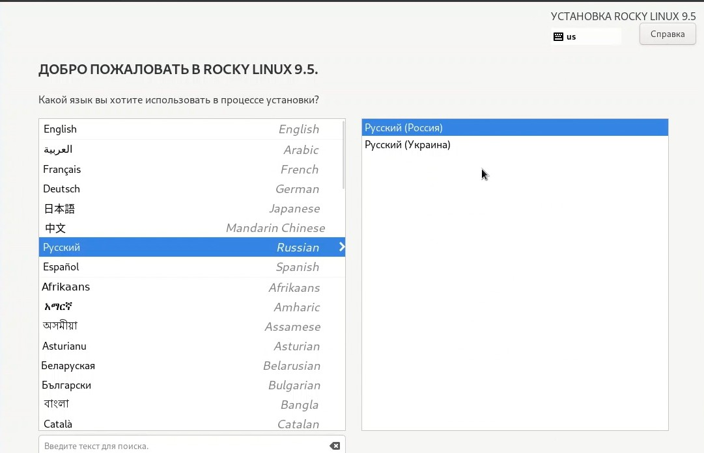
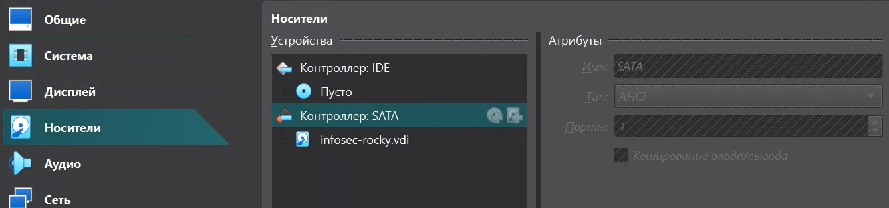
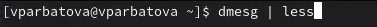
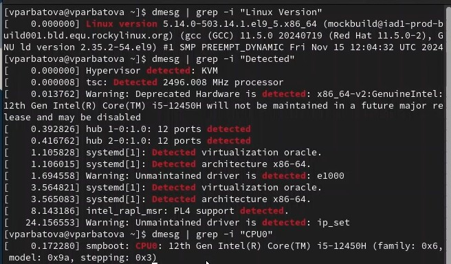

Целью данной работы является приобретение практических навыков установки операционной системы на виртуальную машину,настройки минимально необходимых для дальнейшей работы сервисов
Теоретическое введение
Лабораторная работа подразумевает установку на виртуальную машину VirtualBox(https://www.virtualbox.org/)операционной системы Linux (дистрибутив Rocky (https://rockylinux.org/)). Выполнение работы возможно как в дисплейном классе факультета физико-математических и естественных наук РУДН, так и дома. Описание выполнения работы приведено для дисплейного класса со следующими характеристиками:– Intel Core i3-550 3.2 GHz, 4 GB оперативной памяти, 20 GB свободного места на жёстком диске;– ОСLinuxGentoo(http://www.gentoo.ru/);– VirtualBox верс.6.1 или старше;– каталог с образами ОС для работающих в дисплейном классе: /afs/dk.sci.pfu.edu.ru/common/files/iso/.
Выполнение лабораторной работы
Создание и настройка виртуальной машины
Создаю виртуальную машину
создание виртуальной машины
Согласно соглашению об именовании даю имя пользователя и компьютера, ввожу пароль
имя пользователя
Настраиваю количество оперативной памяти и процессоров
Количество памяти и процессоров
Выделяю место для виртуального жесткого диска
виртуальный жесткий диск
Выбираю язык установки
Язык установки
Задаю пароль root
Задание пароля
Создаю пользователя, удовлетворяющего соглашению об именовании
Создание пользователя
Произвожу выбор программ
Выбор программ
Выключаю KDUMP
Выключаю KDUMP
Меняю имя узла
Имя узла
Запускаю машину
Запуск машины
Проверяю что диск отключен
Носители
Выполнение домашнего задания
В окне терминала анализирую последовательность загрузки системы, выполнив команду dmesg
Загрузка системы
Версия ядра линукс, частота процессора, модель процессора
Ядро, процесс
Память
Память
Тип обнаруженного гипервизора
гипервизор
sudo fdish -l показывает тип файловой системы, типа Linux, Linux LVM
тип файловой системы
Последовательность монтирования файловых систем
Последовательность монтирования
Выводы
Мной была установлена и настроена виртуальная машина